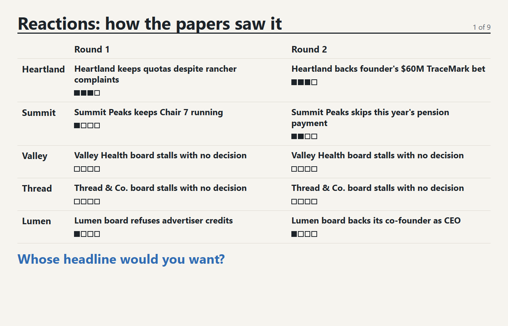
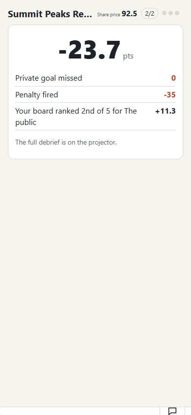

Principals: design audit
2026-11-08. Yardstick: HydeVault/references/design (principles, symptoms, checklists/audit-game.md). Format modeled on the 11/04 Board audit (references/design/audits/board-2026-11-04/report.html), with the focus of the Bull Market game-language work (game-language/HANDOFF.md, Classes/MBA/game/bull-proto/DESIGN.md): save space, images and dials over words. Recommendations only; no game files were changed.
Scope
Week 12 corporate governance game: 5 boards of 6 to 7 seats, three rounds, each with shock, play and outside steps. Surfaces: team phone (about 390 to 474 px wide), outside player phone, projector (1400 px), host admin. Evidence: the 44 gallery PNGs in test/gallery (manifest.json), plus style.css, render.js, play.html, projector.html. Measured from the PNGs: the team phone screen is 2,977 to 3,023 px tall at 474 px wide, about 6 to 7 phone screens of scrolling; the final projector reveal is 4,566 px tall at 1400 px wide, about five projector screens. Not measured: real-device touch targets and live-room timing. Decisions not reopened: money not points, wallet never touches grades.
Dyslexia lens throughout: one question per screen, show then read, the same thing in the same place, predictable order, less text to parse. Type is already fine (system-ui 16px, line height 1.4, 44px buttons), so the findings are about volume and structure.
What is bothering you, named
Too much text, I don't know where to look, Takes too many steps (scrolling), I can't see it all at once, and The games don't feel like one family. Principals already has good dials (Payout, Wages, Price) and a credibility gauge, but they sit under a column of paragraphs.
Ranked fixes
1. Team phone, play step: the director card stacks five jobs effort Mimpact highest

Wrong. One scroll holds role, secret, budget, four fact checkboxes, a free-text statement, a Call vote button, six motions at three lines each, standing motions, a roster, stock dials and chat. The reader meets about 60 words of role text before the first choice. The role line also repeats itself: "Community seat, Community seat".
Fix. Split the director phone into three steps in a fixed order: 1 Facts, 2 Statement (a one-line field with chips to pick from), 3 Motions. Show only the current step with a three-dot progress mark that never moves. Collapse role and secret to a one-line chip that expands on tap. Move chat behind a floating button. Fix the duplicated role label.
Principles. staging-one-idea-per-beat: "Everything happens at once. Cannot focus." (Swink, PDF 160, 318-319). progressive-disclosure: "Show the common path first and tuck detail behind an obvious control" (Lidwell, PDF 62, 78). effort-and-steps: count the steps and cut them (Lidwell, PDF 75). Wiki pages: references/design/principles/{staging-one-idea-per-beat,progressive-disclosure,effort-and-steps}.md.
2. Motions list: six items, three text lines each effort M

Wrong. Each motion has a title, a one to two line sentence, a cost, a Call vote button and a row of stakeholder arrows with text labels (Shareholders, Line workers, Grocers and diners). Six in a column is the long motions list. The arrows are the best part, but they are repeated as words.
Fix. One row per motion: icon, three-word title, cost in a fixed right-hand slot, then the stakeholder effects as a fixed five-icon strip (same stakeholders, same order every time, arrow up or down in a colour, no words). Tap a row to open the one sentence and the Call vote button. A fixed order lets a skimmer read the pattern instead of the labels.
Principles. omit-needless-words: "Replace text with a picture, dial or chart where one can do the job" (Lidwell, PDF 77; Krug, PDF 77-80). natural-mapping (Norman, PDF 41, 132-135). scanning-and-satisficing (Krug, PDF 40-44).
3. Company issue: facts told twice, severity in tiny grey text effort S

Wrong. The issue is a paragraph, then the same facts again as four full-sentence checkboxes, then severity as "(light) (serious) (severe)" in small text. Severity is the thing the player must weigh and it is the smallest thing on the card.
Fix. Drop the paragraph; the four facts are the issue. Each fact is a switch row with a one-to-three bar severity meter in a fixed right slot (colour ramp, no word). Add a live counter, "2 of 4 admitted", with a small risk dial so the consequence is visible.
Principles. omit-needless-words (Krug, PDF 77-80). reading-order: "Lead with the conclusion, then support it" (Lidwell, PDF 59). meaningful-choices: each choice needs a visible consequence (Schell, p. 181-182).
4. Projector reveal: a 4,566 px scroll of paragraphs effort L

Wrong. One page holds a heatmap, seven seat cards, five board cards with three rounds of narrative, struck-through fact lists, quotes, secrets and the Street list. The room cannot read it or follow it in order. The heatmap is the strongest element and it is small.
Fix. Host-driven slides: 1 the heatmap alone, large; 2 per board, one chip per round (admitted all, some, nothing; caught or safe), the stock sparkline and who gained; 3 secrets met or missed as ticks; 4 the Street. Keep the full narratives on an expand-on-click board page.
Principles. single-screen-glance: fit the whole picture on one screen (Few, PDF 26-27, 39-43). summary-and-exception: "a summary plus the exceptions" (Few, PDF 27, 83, 94-95). staging-one-idea-per-beat (Swink, PDF 318-319).
5. Projector play step: fifteen dials at 100.0 and half the screen empty effort M

Wrong. Five cards show a stock number and three dials that all read neutral. About half of the 1400 by 900 frame is blank below the Wire. The event, the one thing that changes, is a small text bar and the Wire repeats it. Card heights are uneven because "Summit Peaks Resorts" wraps.
Fix. Make the stock figure and sparkline the hero, dials half size. Show the live shock as a big icon plus four words and drop it from the Wire. Add five per-board dots (waiting, voting, locked) so the room sees which table is stalling.
Principles. focal-point: one dominant element per screen (Lidwell, PDF 41). data-density-and-shrink: avoid thin, empty displays (Tufte, PDF 155, 160-162). alignment.
6. Outside player: five identical 100.0 tiles, a chat that grows effort S

Wrong. The one decision is a 2-column grid with a lone fifth tile, every tile shows 100.0 and a flat sparkline, and selection is only a blue border. Role and secret come before the choice, then Wire, a collapsed tip box and a chat of repeated "Watching X this round." bot lines.
Fix. Question first as one line, "Which board do you target?", then five full-width tiles with a check icon on the selected one. Collapse the role to an icon chip, cap chat at the last three lines with a badge, fold the Wire into a ticker.
Principles. reading-order (Lidwell, PDF 51, 59). meaningful-choices (Schell, p. 181). focal-point (Lidwell, PDF 41).
7. Same panels, different order from step to step effort S

Wrong. In the shock step news is first and role second; in the play step role jumps to the top and news disappears; once a vote is called "Votes so far" appears between motions and roster. The step pill reads "New round . round 1" and "Board in session . round 1" with a stray dot. A reader who has to re-find things each step pays for it.
Fix. Fixed frame: header (team, step pill, clock), one hero slot that changes by step (news, decision, result), fixed bottom bar (role chip, stock, chat). Panels never swap places. Show the step as three dots: shock, play, outside.
Principles. repetition-and-consistency: same meaning, same look (Few, PDF 51-52; Williams, PDF 50, 53). wayfinding: keep navigation in the same place and mark the location (Williams, PDF 121; Krug, PDF 83-113). predictable-control (Swink, PDF 317-319).
8. Team reveal card: three facts in one sentence effort S

Wrong. "Secret: missed. Exposure: safe. Your home community ranked this board 1 of 5." carries three results, and the number sits below it. Chat takes more than half the screen at the moment of results. It says "points", while the house rule is money.
Fix. Three icon tiles (secret tick or cross, exposure shield or siren, rank as a 1-to-5 dial), the payout as the hero number in house money format, chat collapsed. PENDING STEVEN: confirm whether "points" here is a game score or a wallet figure.
Principles. omit-needless-words (Lidwell, PDF 77). focal-point (Lidwell, PDF 41). repetition-and-consistency (Williams, PDF 89).
9. Chat is the largest object on every phone effort S

Wrong. The chat panel is a tall box (about 450 px of the 3,000 px team page even when empty) with seven tab buttons that scroll sideways, and it repeats lines like "Do we really want to leave that fact out?" three times. Chat is part of the game, so it should be clear, but it gets more room than the decision.
Fix. Bottom sheet on tap with an unread badge, three quick-reply chips so a student can act without typing, tabs only for the board plus a DM icon, deduped bot lines.
Principles. proximity-and-grouping (Few, PDF 74-79; Refactoring UI, PDF 96-99). progressive-disclosure (Lidwell, PDF 62, 78). effort-and-steps (Lidwell, PDF 75).
10. Host admin: unstyled and not a control room effort S

Wrong. The screen that runs the class has default blue links, a raw localhost URL and a 34-name list that outweighs the Start button. Timers are three bare number boxes. Nothing tells the host which table is stuck, and the look does not match the phone and projector.
Fix. Hero: joined count, QR code for the join link, one Start button. Names as a wrapping chip grid. During play, five table tiles with lock status and a Next step button in a fixed corner. Timers as presets.
Principles. repetition-and-consistency (Williams, PDF 50, 53, 63, 89). design-vocabulary-and-kit-of-parts. focal-point (Lidwell, PDF 41).
Also noticed
The stock sparkline starts as a single dot and reads as a rendering fault. "Gained: nobody Paid: Shareholders" on reveal cards runs two ideas together. Roster labels "Sim 6" expose bots; fine in testing, check it is hidden in class. The Wire has a double period ("Thread & Co..").
Open questions for Steven
Is "points" on the team reveal a score or a wallet figure? Should the reveal be host-driven slides (fix 4), which changes the admin flow? Are the five stakeholders the same on every board, so one icon strip works? Conflicts.md was not re-read for this pass, so no finding is marked against an undecided conflict; check it before approving fix 1, since splitting the director phone into steps touches the progressive-disclosure tension.
Caveats. Page cites were copied from the Sources and fix lines of each principle page; the sonnet cite-check step from the skill was not run. No Bull Market audit report file exists in the vault, so the Board audit is the format model.